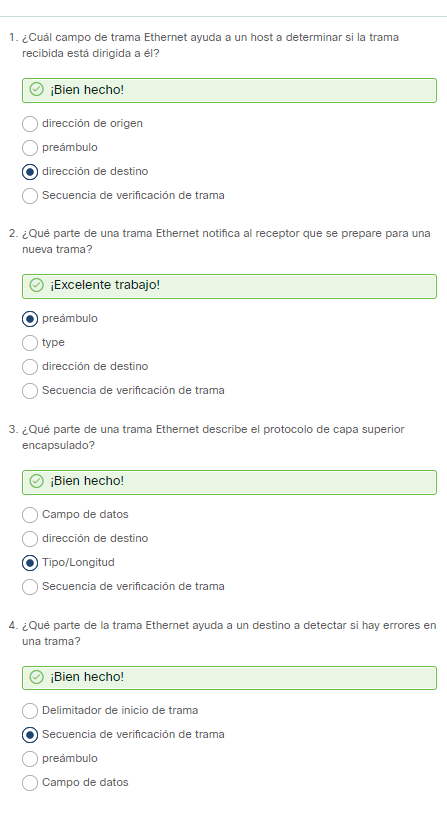
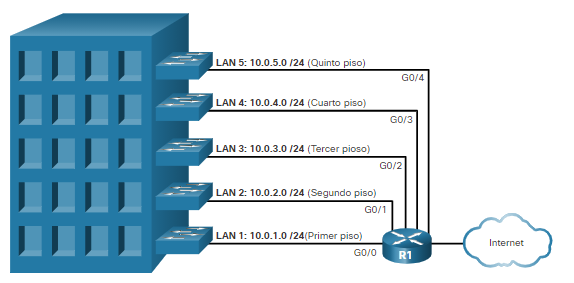
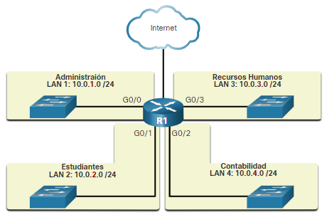

¿Por qué debería tomar este módulo?
¿Cómo saben los dispositivos cómo enviar y recibir información dentro de la red y desde la extensa Internet? Cada dato que se envía requiere direcciones, direcciones para el destino y direcciones para devolver información al origen.
Los analistas de ciberseguridad trabajan para identificar y analizar los rastros de incidentes de seguridad de la red. Estos indicadores consisten en registros de eventos de la red. Estos eventos, guardados en archivos de registro de varios dispositivos, se componen principalmente de detalles de las operaciones de protocolos de red.
Las direcciones permiten identificar qué hosts se conectan entre sí ya sea dentro de una organización o con hosts distantes en Internet. Las direcciones en los archivos de registro también determinan qué hosts externos se conectaron (o intentaron conectarse) con hosts dentro de una organización.
Es crucial que un analista de ciberseguridad sepa todo lo que pueda acerca de Ethernet y direccionamiento IP. Este módulo comienza con una discusión de la tecnología Ethernet incluyendo una explicación de la subcapa MAC de la capa 2 y los campos de trama de Ethernet. El resto del módulo analiza las direcciones IPv4 e IPv6 de la capa 3
y cómo se utilizan para enrutar paquetes desde el origen al destino.
¿Qué aprenderé en este módulo?
Título del módulo. Protocolos Ethernet e IP.
Objetivos del módulo. Explicar cómo los protocolos Ethernet e IP permiten la comunicación en redes.
| Título del tema | Ethernet | IPv4 | Conceptos básicos del direccionamiento IP | Tipos de direcciones IPv4 | El gateway predeterminado | IPv6 |
| Objetivo del tema | Explique como Ethernet permitela comunicación en redes | Explique cómo el IPv4 permite la comunicación en redes | Explique cómo las direcciones IP permiten la comunicación en redes | Explique el tipo de dirección IPv4 que permite la comunicación en redes | Explique cómo el gateway predeterminado permite la comunicación en redes | Explique cómo el IPv6 permite la comunicación en redes |
Ethernet
Ethernet y las redes inalámbricas (WLAN) son las dos tecnologías LAN más utilizadas. A diferencia de las redes inhalámbricas, Ethernet utiliza comunicaciones por cable, incluyendo par trenzado, enlaces de fibra óptica y cables coaxiales.
Ethernet funciona en la capa de enlace de datos y en la capa física. Es una familia de tecnologías de redes definidas en los estándares IEEE 802.2 y 802.3. Ethernet soporta los siguientes anchos de banda de datos:
- 10 Mbps
- 100 Mbps
- 1000 Mbps (1 Gbps)
- 10.000 Mbps (10 Gbps)
- 40,000 Mbps (40 Gbps)
- 100,000 Mbps (100 Gbps)
Ethernet se define mediante protocolos de capa física y de capa de enlace de datos.
Campos de trama de Ethernet
El tamaño mínimo de trama de Ethernet es de 64 bytes, y el máximo es de 1518 bytes. Esto incluye todos los bytes del campo de dirección MAC de destino a través del campo de secuencia de verificación de trama (FCS). El campo preámbulo no se incluye al describir el tamaño de una trama.
Cualquier trama de menos de 64 bytes de longitud se considera un fragmento de colisión o una trama corta, y es descartada automáticamente por las estaciones receptoras. Las tramas de más de 1500 bytes de datos se consideran “jumbo” o tramas bebés gigantes.
Si el tamaño de una trama transmitida es menor que el mínimo o mayor que el máximo, el dispositivo receptor descarta la trama. Es posible que las tramas descartadas se originen en colisiones u otras señales no deseadas. Ellas se consideran inválidas Sin embargo, las interfaces Fast Ethernet
y Gigabit Ethernet de algunos switches Catalyst de Cisco se pueden configurar para admitir tramas jumbo más grandes.
La figura muestra cada campo en la trama Ethernet. Consulte la tabla para obtener más información sobre la función de cada campo.
Campos de trama de Ethernet

Formato de direcciones MAC

Según el dispositivo y el sistema operativo, puede ver varias representaciones de direcciones MAC, como se muestra en la figura 2.
Diferentes representaciones de direcciones MAC

Verificación de comprensión - Campos de trama Ethernet

Dirección
La capa de red
La capa de red, o Capa OSI 3, proporciona servicios para permitir que los dispositivos finales intercambien datos a través de redes. Como se muestra en la figura, IP versión 4 (IPv4) e IP versión 6 (IPv6) son los principales protocolos de comunicación de la capa de red. Otros protocolos de capa de red incluyen protocolos de enrutamiento como Open Shortest Path First (OSPF) y protocolos de mensajería como Internet Control Message Protocol (ICMP).
Protocolos de capa de red

- Direccionamiento de dispositivos finales: los dispositivos finales deben configurarse con una dirección IP única para la identificación en la red.
- Encapsulación: La capa de red encapsula la unidad de datos de protocolo (PDU) de la capa de transporte en un paquete. El proceso de encapsulamiento agrega información del encabezado IP, como la dirección IP de los hosts de origen (emisores) y de destino (receptores). El proceso de encapsulación lo realiza la fuente del paquete IP.
- Enrutamiento: La capa de red proporciona servicios para dirigir los paquetes a un host de destino en otra red. Para transferir un paquete a otras redes, debe procesarlo un router. La función del router es seleccionar la mejor ruta y dirigir los paquetes al host de destino en un proceso que se denomina "enrutamiento". Un paquete puede cruzar muchos routers antes de llegar al host de destino. Se denomina "salto" a cada router que cruza un paquete antes de alcanzar el host de destino.
- Desencapsulación: Cuando el paquete llega a la capa de red del host de destino, el host verifica el encabezado IP del paquete. Si la dirección IP de destino dentro del encabezado coincide con su propia dirección IP, se elimina el encabezado IP del paquete. Una vez que la capa de red desencapsula el paquete, la PDU de capa 4 que se obtiene se transfiere al servicio apropiado en la capa de transporte. El proceso de desencapsulación lo realiza el host de destino del paquete IP.
Encapsulación IP
IP encapsula el segmento de la capa de transporte (la capa justo por encima de la capa de red) u tros datos agregando un encabezado IP. El encabezado IP se usa para entregar el paquete al hosts de destino.
La figura ilustra cómo la PDU de la capa de transporte es encapsulada por la PDU de la capa de red para crear un paquete IP.
El encabezado IP es examinado por dispositivos de Capa 3 (es decir, routers y switches de Capa 3) a medida que viaja a través de una red a su destino. Es importante tener en cuenta que la información de direccionamiento IP permanece igual desde el momento en que el paquete sale del host de origen hasta que llega al host de destino, excepto cuando se traduce por el dispositivo que realiza la traducción de direcciones de red (NAT) para IPv4.
Nota: NAT se discute en módulos posteriores.
Los routers implementan protocolos de enrutamiento para encaminar paquetes entre redes. El enrutamiento realizado por estos dispositivos intermediarios examina el direccionamiento de la capa de red en el encabezado del paquete. En todos los casos, la porción de datos del paquete, es decir, la PDU de la capa de transporte encapsulada u otros datos, permanece sin cambios durante los procesos de la capa de red.
Características de IP
IP se diseñó como un protocolo con sobrecarga baja. Provee solo las funciones necesarias para enviar un paquete de un origen a un destino a través de un sistema interconectado de redes. El protocolo no fue diseñado para rastrear ni administrar el flujo de paquetes. Estas funciones, si es necesario, están a cargo de otros protocolos en otras capas, principalmente TCP en la capa 4. Estas son las características básicas de la IP:
- Sin conexión. No hay conexión con el destino establecido antes de enviar paquetes de datos.
- Mejor esfuerzo. La IP es inherentemente poco confiable porque no se garantiza la entrega de paquetes.
- Medios independientes. La operación es independiente del medio (es decir, cobre, fibra óptica o inalámbrico) que transporta los datos.
Sin conexión
IP sin conexión, significa que el protocolo IP no crea una conexión de extremo a extremo dedicado antes de enviar los datos. La comunicación sin conexión es conceptualmente similar a enviar una carta a alguien sin notificar al destinatario por adelantado.
Mejor esfuerzo
El protocolo IP tampoco necesita campos adicionales en el encabezado para mantener una conexión establecida. Este proceso reduce en gran medida la sobrecarga del protocolo IP. Sin embargo, sin una conexión completa preestablecida, los remitentes no saben si los dispositivos de destino están presentes y en funcionamiento cuando envían paquetes, ni tampoco si el destinatario recibe el paquete o si puede
acceder al paquete y leerlo.
El proctocolo IP no garantiza que todos los paquetes que se envían, dehecho, se reciban.

Independiente de los medios.
Que sea poco confiable significa que el protocolo IP no tiene la capacidad para administrar y recuperar paquetes no recibidos o dañados. Esto se debe a que, si bien los paquetes IP se envían con información sobre la ubicación de la entrega, no contienen información que pueda procesar para informar al remitente si la entrega fue exitosa. Es posible que los paquetes lleguen dañados o fuera de secuencia al
destinatario o que no lleguen en absoluto. El protocolo IP no tiene la capacidad de retransmitir aquetes si se producen errores.
Las aplicaciones que usan los datos o los servicios de capas superiores deben solucionar problemas como el envío de paquetes fuera de orden o la pérdida de paquetes. Esta característica permite que el protocolo IP funcione de manera muy eficaz. En el conjunto de protocolos TCP/IP, la confiabilidad es la función del protocolo TCP en la capa de transporte.
IP funciona independientemente de los medios que transportan los datos en las capas más bajas de la pila de protocolos. Como se muestra a continuación, los paquetes IP pueden ser señales electrónicas que se transmiten por cables de cobre, señales ópticas que se transmiten por fibra óptica o inalámbricamente como las señales de radio.
Los paquetes IP pueden trasladarse a través de diferentes medios.
Sin embargo, la capa de red tiene en cuenta una de las características más importantes del medio, que es el tamaó máximo de PDU que cada medio puede transportar. Esta característica se conoce como 'unidad de transmisión máxima' (MTU). Parte del control de la comunicación entre la capa de enlace de datos y la capa de red consiste en establecer el tamaño máximo del paquete. La capa de enlace de datos pasa el valor de MTU a la capa de red. La capa de red luego determina qué tamaño pueden tener los paquetes.
En algunos casos, un dispositivo intermedio, generalmente un router, debe dividir un paquete IPv4 cuando lo reenvía de un medio a otro con una MTU más pequeña. Este proceso se llama 'fragmentación de paquetes' o 'fragmentación'. La fragmentaciónprovoca latencia, El router no puede fragmentar los paquetes IPv6.
Verificación de comprensión

Encabezamiento de paquetes IPv4
IPv4 es uno de los protocolos de comunicación de la capa de red principal. El encabezamiento del paquete IPv4 se usa para garantizar que este paquete se entrega en su siguiente parada en el camino a su dispositivo final de destino.
El encabezamiento de paquetes IPv4 consta de campos que contienen información importante sobre el paquete. Estos campos tienen números binarios que examinan el proceso de capa 3.
Campos de encabezado de paquetes IPv4.
Los valores binarios de cada campo identifican diversos parámetros de configuración del paquete IP. Los diagramas de encabezado del protocolo, que se leen de izquierda a derecha y de arriba a abajo, proporcionan una representación visual de consulta al analizar los campos de protocolo. El diagrama de encabezamiento del protocolo IP en la ilustración identifican los campos de un paquete IPv4.
- Versión. Contiene un valor binario de 4 bits en 0100 que identifica este como un paquete IPv4.
- Servicios diferenciados o DiffServ (DS). Este campo, formalmente conocido como Tipo de Servicio (ToS), es un campo de 8 bits que se usan para determinar la prioridad de cada paquete. Los seis bits más significativos del campo DiffServ son los bits de punto de código de servicios diferenciados (DSCP) y los dos últimos bits son los bits de notificación de congestión explícita (ECN).
- Suma de comprobación de encabezado. Se usa para detectar daños en el encabezado IPv4.
- Tiempo de duración (Time to Live, TTL). TTL contiene un valor binario de 8 bists que se usa para limitar la vida útil de un paquete. El dispositivo de origen del paquete IPV4 establece el valor TTL inicial. Se reduce en uno cada vez que el paquete es procesado por un router. Si el campo TTL llega a cero, el router descarta el paquete y envía a la dirección IP de origen un mensaje de tiempop superado del protocolo de mensajes de control de Internet (ICMP). Debido a que el router disminuye el TTL de cada paquete, el router también debe volver a calcular la suma de comprobación del encabezado.
- Protocolo. Este campo se usa para identificar el protocolo del siguiente nivel. Este valor binario de 8 its indica el tipo de carga de datos que lleva el paquete, lo que permite que la capa de red transmita los datos al protocolo de la capa superior apropiado. ICMP(1), TCP(2) y UDP(17) son algunos valores comunes.
- Dirección IPv4 de origen. Contiene un valor binario de 32 bits que representa la dirección IPv4 de origen del paquete. La dirección IPv4 de origen es siempre una dirección unicast.
- Dirección IPV4 de destino. Contiene un valor binario de 32 bits que representa la dirección IPV4 de destino del paquete. La dirección IPv4 de destino es una dirección unicast, multicast o de difusión.
Los campos Longitud de encabezado de Internet (IHL), Longitud total y Suma de comprobación del encabezado se utilizan para identificar y validar el paquete.
Para reordenar un paquete fragmentado, se usan otros campos. Específicamente, el paquete IPv4 utiliza los campos de identificación, señaladores y desplazamiento de fragmentos para llevar un control de los fragmentos. Un router puede tener que fragmentar un paquete IPv4 cuando lo reenvía de un medio a otro con una MTU más pequeña.
Los campos Opciones y Relleno rara vez se usan y están fuera del alcance de este módulo.
Comprensión de conocimientos - Paquete IPv4

Conceptos básicos de direccionamiento IP
Porciones de red y de host
La estructura de las direcciones IP consta de una dirección de red jerárquica de 32 bits que identifica a una red y a un host dentro de una red. Al determinar la porción de red frente a la porción del host, debe mirar la secuencia de 32 bits, como se muestra en la figura.
El diagrama muestra el desglose de una dirección IPv4 en las partes de red y host. La dirección IPv4 es 192.168.10.10. Debajo, la dirección se convierte en 11000000 10101000 00001010 00001010. Una línea discontinua muestra la separación entre las partes de red y host. Esto ocurre después del tercer octeto y el bit 24.
Dirección IPv4
¿Pero cómo saben los hosts qué porción de los 32 bits identifica la red y qué porción identifica el host? El rol de la máscara de subred
La máscara de subred
Como se muestra en la figura, asignar una dirección IPv4 a un hosts requiere lo siguiente:
- Dirección IPv4. Esta es la dirección IPv4 única del host.
- Máscara de subred. Se usa para identificar la parte de red/host de la dirección IPv4.
Configuración IPv4 en un equipo con Windows

Para identificar las porciones de red y host de una dirección IPv4, la máscara de subred se compara con la dirección IPv4 bit por bit, de izquierda a derecha como se muestra en la figura.

El proceso real que se usa para identificar la porción de red y la porción de host se denomina AND.
La longitud de prefijo.
Puede ser difícil expresar direcciones de red y de host con la dirección de la máscara de subred decimal punteada. Afortunadamente, hay un método alternativo para identificar una máscara de subred, un método llamado longitud del prefijo. La longitud del prefijo es el número de bits establecidos en 1 en la máscara de subred. Está escrito en "notación de barra", que se observa mediante una barra diagonal (/) seguida del número de bits establecidos en 1. Por lo tanto, cuente el número de bits en la máscara de subred y anteponga una barra diagonal. Consulte la tabla para ver ejemplos. En la primera columna, se enumeran varias máscaras de subred que se pueden usar con una dirección de host. En la segunda columna, se muestra la dirección binaria de 32 bits convertida. En la última columna, se muestra la longitud de prefijo resultante.
Máscara de subred Dirección de 32 bits Longitud de prefijo 255.0.0.0 11111111.00000000.00000000.00000000 /8 255.255.0.0 11111111.11111111.00000000.00000000 /16 255.255.255.0 11111111.11111111.11111111.00000000 /24 255.255.255.128 11111111.11111111.11111111.10000000 /25 255.255.255.192 11111111.11111111.11111111.11000000 /26 255.255.255.224 11111111.11111111.11111111.11100000 /27 255.255.255.240 11111111.11111111.11111111.11110000 /28 255.255.255.248 11111111.11111111.11111111.11111000 /29 255.255.255.252 11111111.11111111.11111111.11111100 /30Nota: Una dirección de red también se conoce como prefijo o prefijo de red. Por lo tanto, la longitud del prefijo es el número de bits "1" en la máscara de subred. Al representar una dirección IPv4 utilizando una longitud de prefijo, la dirección IPv4 se escribe seguida de la longitud del prefijo sin espacios. Por ejemplo, 192.168.10.10 255.255.255.0 se escribiría como 192.168.10.10/24. Más adelante se analiza el uso de varios tipos de longitudes de prefijo. Por ahora, el foco estará en el prefijo / 24 (es decir, 255.255.255.0)
Determinación de la red: lógica AND
Un AND lógico es una de las tres operaciones booleanas utilizadas en la lógica booleana o digital. Las otras dos son OR y NOT. La operación AND se usa para determinar la dirección de red. el AND lógico es la comparación de dos bits que producen los resultados que se muestran a continuación. Observe que solo mediante 1 AND 1 se obtiene 1. Cualquier otra combinación da como resultado un 0.
- 1 Y 1 = 1
- 0 Y 1 = 0
- 1 Y 0 = 0
- 0 Y 0 = 0
Para identificar la dirección de red de un host IPv4, se recurre a la operación lógica AND para la dirección IPv4, bit por bit, con la máscara de subred. El uso de la operación AND entre la dirección y la máscara de subred produce la dirección de red.
Para ilustrar cómo se usa AND para descubrir una dirección de red, considere un host con dirección IPv4 192.168.10.10 y una máscara de subred de 255.255.255.0, como se muestra en la figura:
Dirección de hostIPv4 (192.168.10.10)-La dirección IPv4 del host en formato decimal y binario punteados.
Máscara de subred (255.255.255.0)--La máscara de subred del host en formatos decimales y binarios punteados.
Utilizando la primera secuencia de bits como ejemplo, observe que la operación AND se realiza en el bit 1 de la dirección del host con el bit 1 de la máscara de subred. Esto resulta en un bit "1" para la dirección de red. 1 AND 1 = 1.
La operación AND entre una dirección de host IPv4 y una máscara de subred da como resultado la dirección de red IPv4 para este host. En este ejemplo, la operación AND entre la dirección host 192.168.10.10 y la máscara de subred 255.255.255.0 (/24) da como resultado la dirección de red IPv4 192.168.10.0/24. Esta es una operación IPv4 importante, ya que le dice al host a qué red pertenece.
División en subredes de los dominios de difusión.
La red 192.168.10.0/24 puede admitir 254 hosts. Las redes de mayor tamaño, como 172.16.0.0/16, admite muchas más direcciones de host (más de 65 000). Sin embargo, es posible que esto pueda crear un dominio de difusión mayor.
Un problema con un dominio de difusión grande es que estos hosts pueden generar difusiones excesivas y afectar la red de manera negativa. En la Figura , LAN 1 conecta 400 usuarios, cada uno con capacidad para generar tráfico de difusión.
Esa cantidad de tráfico de difusión puede ralentizar las operaciones de red. Puede reducir las operaciones de los dispositivos, debido a que cada dispositivo debe aceptar y procesar cada paquete de difusión.
Un router, R1, está conectado a un switch a través de la interfaz G0/0. El switch está conectado a tres otros switches. El dominio de difusión consiste en los cuatro conmutadores y la interfaz del router a la que están conectados.
Esto se identifica como LAN1 con una dirección de 172.16.0.0/16. Una conexión desde el router a Internet no está dentro del dominio de difusión.
Un dominio de difusión amplio
La solución es reducir el tamaño de la red para crear dominios de difusión más pequeños mediante un proceso que se denomina división en subredes. Estos espacios de red más pequeños se denominan subredes.


La división en subredes disminuye el tráfico de red general y mejora su rendimiento. También permite a un administrador implementar políticas de seguridad que controlan qué subredes pueden comunicarse entre sí, por ejemplo.
Existen diversas maneras de usar las subredes para contribuir a administrar los dispositivos de red. Los administradores de red pueden agrupar dispositivos y servicios en subredes que pueden estar determinadas por una variedad de factores:
Ubicación

Por departamento

Tipo de dispositivo

Compruebe su compresión - Estructura de direcciones IPv4

Clases de direcciones IPv4 y máscaras de subred predeterminadas
Clases de direcciones IPv4 y máscaras de subred predeterminadas
Hay varios tipos y clases de direcciones IPv4. Mientras que las clases de direcciones son cada vez menos importantes en las redes, todavía se utilizan y mencionan con frecuencia en la documentación sobre redes.
Clases de direcciones
En 1981, las direcciones IPv4 se asignaban mediante el direccionamiento con base a esquemas de clases, según se define en RFC 790. A los clientes se les asignaba una dirección de red basada en una de tres clases: A, B o C. El RFC dividía los rangos unicast en las siguientes clases específicas:- Clase A (0.0.0.0/8 a 127.0.0.0/8): Diseñada para admitir redes extremadamente grandes, con más de 16 millones de direcciones de host. Usaba un prefijo /8 fijo donde el primer octeto indicaba la dirección de red y los tres octetos restantes eran para las direcciones de host.
- Clase B (128.0.0.0/16 a 191.255.0.0/16): Diseñada para satisfacer las necesidades de redes de tamaño moderado a grande, con hasta 65 000 direcciones de host. Usaba un prefijo /16 fijo donde los dos octetos de valor superior indicaban la dirección de red y los dos octetos restantes eran para las direcciones de host.
- Clase C (192.0.0.0/24 a 223.255.255.0/24): Diseñada para admitir redes pequeñas con un máximo de 254 hosts. Usaba un prefijo /24 fijo donde los tres primeros octetos indicaban la red y el octeto restante era para las direcciones de host.
Tal como se indica en la figura, el sistema de clases asignaba el 50% de las direcciones IPv4 disponibles a 128 redes Clase A, el 25% de las direcciones a la Clase B y, luego, la Clase C compartía el 25% restante con las Clases D y E. Aunque era adecuado en su momento, con la expansión de Internet resultó obvio que este método estaba desperdiciando direcciones y reducía la cantidad de direcciones de red IPv4 disponibles.

Direcciones privadas reservadas
Las direcciones IPv4 públicas son direcciones en las que se realiza routing globalmente entre los routers ISP. Sin embargo, no todas las direcciones IPv4 disponibles pueden usarse en Internet. Existen bloques de direcciones denominadas direcciones privadas que la mayoría de las organizaciones usan para asignar direcciones IPv4 a los hosts internos. A mediados de la década de 1990, se presentaron las direcciones IPv4 privadas debido al agotamiento del espacio de direcciones IPv4. Las direcciones IPv4 privadas no son exclusivas y cualquier red interna puede usarlas. Estos son los bloques de direcciones privadas:
- 10.0.0.0 a 10.255.255.255
- 172.16.0.0 a 172.31.255.255
- 192.168.0.0 a 192.168.255.255
Direcciones privadas no se pueden enrutar a través de Internet
La mayoría de las organizaciones usan direcciones IPv4 privadas para los hosts internos. Sin embargo, estas direcciones RFC 1918 no se pueden enrutar en Internet y deben traducirse a direcciones IPv4 públicas. Se usa la traducción de direcciones de red (NAT) para traducir entre direcciones IPv4 privadas y públicas. En general, esto se hace en el router que conecta la red interna a la red del ISP.
Los routers domésticos brindan la misma funcionalidad. Por ejemplo, la mayoría de los routers domésticos asignan direcciones IPv4 a sus hosts cableados e inalámbricos desde la dirección privada 192.168.1.0 /24. A la interfaz del router doméstico que se conecta a la red del proveedor de servicios de Internet (ISP) se le suele asignar una dirección IPv4 pública para usar en Internet.
La desición de reenvío de host
Con IPv4 e IPv6, los paquetes siempre se crean en el host de origen. El host de origen debe poder dirigir el paquete al host de destino. Para ello, los dispositivos finales de host crean su propia tabla de enrutamiento. En este tema se explica cómo los dispositivos finales utilizan las tablas de enrutamiento. Otra función de la capa de red es dirigir los paquetes entre hosts. Un host puede enviar un paquete según lo siguiente:
- A sí mismo- Un host puede hacerse ping a sí mismo al enviar un paquete a una dirección IPv4 127.0.0.1, denominada "interfaz de bucle invertido". El hacer ping a la interfaz de bucle invertido, pone a prueba la pila del protocolo TCP/IP en el host.
- Host local - Este es un host de destino que se encuentra en la misma red local que el host emisor. Los hosts de origen y destino comparten la misma dirección de red.
- Host remoto - Este es un host de destino en una red remota. Los hosts de origen y destino no comparten la misma dirección de red.

- En IPv4 - El dispositivo de origen utiliza su propia máscara de subred junto con su propia dirección IPv4 y la dirección IPv4 de destino para realizar esta determinación.
- En IPv6- El router local anuncia la dirección de red local (prefijo) a todos los dispositivos de la red.
Por supuesto, en la mayoría de las situaciones queremos que nuestros dispositivos puedan conectarse más allá del segmento de red local, como a otros hogares, negocios e Internet. Los dispositivos que no están en el segmento de red local se denominan "módulo remoto de E/S". Cuando un dispositivo de origen envía un paquete a un dispositivo de destino remoto, se necesita la ayuda de los routers y del enrutamiento. El enrutamiento es el proceso de identificación de la mejor ruta para llegar a un destino. El router conectado al segmento de red local se denomina gateway predeterminado.
Puesta de enlace predeterminada
La puerta de enlace predeterminada es el dispositivo de red (es decir, el router o el switch de capa 3) que puede enrutar el tráfico a otras redes. Si se piensa en una red como si fuera una habitación, el gateway predeterminado es como la puerta. Si desea ingresar a otra habitación o red, debe encontrar la puerta. En una red, una puerta de enlace predeterminada suele ser un router con estas características:
- Tiene una IP local en el mismo rango de direcciones que otros hosts en la red local.
- Puede aceptar datos en la red local y reenviar datos fuera de la red local.
- Enruta el tráfico a otras redes
Verifique su comprensión - Cómo enruta un hots

IPv6
Ya sabe que IPv4 se está quedando sin direcciones. Es por eso que necesita aprender acerca de IPv6.
IPv6 está diseñado para ser el sucesor de IPv4. IPv6 tiene un espacio de direcciones más grande de 128 bits, que proporciona 340 undecillones (es decir, 340 seguidos de 36 ceros) posibles direcciones. Sin embargo, IPv6 es más que solo direcciones más extensas.
Cuando el IETF comenzó a desarrollar un sucesor de IPv4, aprovechó esta oportunidad para corregir las limitaciones de IPv4 e incluir mejoras. Un ejemplo es el Protocolo de mensajes de control de Internet versión 6 (ICMPv6), que incluye la resolución de direcciones y la configuración automática de direcciones que no se encuentran en ICMP para IPv4 (ICMPv4).
El agotamiento del espacio de direcciones IPv4 fue el factor que motivó la migración a IPv6. A medida que África, Asia y otras áreas del mundo están más conectadas a Internet, no hay suficientes direcciones IPv4 para acomodar este crecimiento. Como se muestra en la ilustración, a cuatro de cinco Registros Regionales de Internet (RIR) se les agotaron las direcciones IPv4.
El gráfico muestra un mapa global de los cinco registros regionales de Internet y las fechas de agotamiento IPv4. La fecha de agotamiento de ARINs IPv4 es julio de 2015, los datos de agotamiento de los NCCs RIPE son septiembre de 2012, la fecha de agotamiento de APNIC es junio de 2014, la fecha de agotamiento de LACNIC es abril de 2011 y la fecha de agotamiento proyectada de AfrINICS es 2020.

Con el número cada vez mayor de dispositivos móviles, los proveedores de telefonía móvil han estado liderando el camino con la transición a IPv6. Los dos principales proveedores de telefonía móvil en los Estados Unidos informan que más del 90% de su tráfico es sobre IPv6.
La mayoría de los principales proveedores de Internet y proveedores de contenido, como YouTube, Facebook y Netflix, también han hecho la transición. Muchas empresas como Microsoft, Facebook y LinkedIn están haciendo la transición a IPv6 solo internamente. En 2018, el ISP de banda ancha Comcast reportó un despliegue de más del 65% y British Sky Broadcasting más del 86%.
Internet de las cosas
En la actualidad, Internet es significativamente distinta de como era en las últimas décadas. Actualmente, Internet es mucho más que el correo electrónico, las páginas web y la transferencia de archivos entre equipos. Internet evoluciona y se está convirtiendo en una Internet de las cosas (IoT). Ya no serán solo los equipos, las tabletas y los teléfonos inteligentes los únicos dispositivos que accedan a Internet. Los dispositivos del futuro preparados para acceder a Internet y equipados con sensores incluirán desde automóviles y dispositivos biomédicos hasta electrodomésticos y ecosistemas naturales.Con una población de Internet cada vez mayor, un espacio limitado de direcciones IPv4, problemas con NAT y el IoT, ha llegado el momento de comenzar la transición a IPv6.
Verifique su comprensión - Tipos de dirección IPv6.

Resumen de Ethernet y protocolo IP
¿Qué aprendí en este módulo?
Ethernet
Ethernet y LAN inalámbricas (WLAN) son las dos tecnologías LAN más populares. Ethernet opera en las capas físicas y de enlace de datos del modelo OSI y se definen en los estándares IEEE 802.2 y 802.3. Ethernet admite anchos de banda de 10 Mbps a 100.000 Mbps. Es importante conocer los campos de trama Ethernet. Una dirección MAC de Ethernet es un valor binario de 48 bits expresado como 12 dígitos hexadecimales (4 bits por dígito hexadecimal). La dirección MAC se puede representar mediante guiones, dos puntos o puntos entre los grupos de dígitos.
IPv4
Los protocolos de capa de red permiten a los dispositivos finales intercambiar datos entre redes e Internet. IP versión 4 (IPv4) e IP versión 6 (IPv6) son los principales protocolos de comunicación de la capa de red. Para lograr comunicaciones punto a punto a través de los límites de la red, los protocolos de capa de red realizan cuatro operaciones básicas: El protocolo IP encapsula el segmento de la capa de transporte agregando un encabezado IP, que se utiliza para entregar el paquete al host de destino, el cuál es examinado por los dispositivos de la capa 3 (es decir, los Routers y Switches capa 3), para alcanzar el host de destino. El protocolo IP es connectionless (no reuqiere una ruta preestablecida), mejor esfuerzo e independiente de los medios. Es importante estar familiarizado con la estructura del paquete IP.
Conceptos básicos del direccionamiento IP
La estructura de las direcciones IP consta de una dirección de red jerárquica de 32 bits que identifica la porción de red y la parte del host dentro de una red. Los bits dentro de la porción de red de la dirección deben ser idénticos para todos los dispositivos que residen en la misma red. Los bits dentro de la porción de host de la dirección deben ser únicos para identificar un host específico dentro de una red. A un host se le asigna una dirección IPv4 y una máscara de subred. La máscara de subred IPv4 se usa para diferenciar la porción de red de la porción de host de una dirección IPv4. La dirección de red representa todos los dispositivos de la misma red. La longitud del prefijo es el número de bits establecidos en 1 en la máscara de subred. Está escrito en "notación de barra", que se observa mediante una barra diagonal (/) seguida del número de bits establecidos en 1. El proceso real utilizado para identificar las porciones de red y host se llama ANDing. Las subredes crean dominios de difusión más pequeños para reducir el tráfico general de la red, mejorar el rendimiento de la red e implementar políticas de seguridad. Las subredes se pueden utilizar para agrupar dispositivos por ubicación, departamento o tipo de dispositivo.
Tipos de direcciones IPv4
Las primeras implementaciones de IPv4 proporcionaron direcciones de red enrutables globalmente basadas en un sistema bajo un esquema de calase, que utiliza las Clases A, B y C, cada una de las cuales tiene diferentes rangos de direcciones IP. Sin embargo, el sistema de direccionamiento bajo este esquema era defectuoso y rápidamente agotó las direcciones de red disponibles y, por lo tanto, fue reemplazado por el actual sistema de direccionamiento sin esquemas de clases. Hay direcciones IPv4 públicas y direcciones IPv4 privadas. Las direcciones privadas deben ser utilizadas por las organizaciones y no se propagan en Internet. Hay tres bloques de direcciones privadas disponibles.
La puerta de enlace (gateway) predeterminada
El dispositivo final de origen determina si un paquete está destinado a un host local o a un host remoto. En IPv4 -: El dispositivo de origen utiliza su propia máscara de subred junto con su propia dirección IPv4 y la dirección IPv4 de destino para realizar esta determinación. En IPv6: El router local anuncia la dirección de red local (prefijo) a todos los dispositivos de la red. El router conectado al segmento de red local se denomina gateway predeterminado. Tiene una dirección IP local en el mismo rango de direcciones que otros hosts en la red local. Puede aceptar datos en la red local y reenviar datos fuera de la red local. Este también enruta el tráfico a otras redes. Una ruta predeterminada es la ruta o camino que la PC utiliza cuando intenta conectarse a la red remota. En un host de Windows, el comando route print o netstat -r se puede usar para mostrar la tabla de enrutamiento del host.
IPv6
Una dirección IPv6 es una dirección jerárquica de 128 bits. El espacio de direcciones de 128 bits proporciona un grupo mucho mayor de direcciones IP disponibles públicamente (340 undecilliones) que IPv4 (4,3 mil millones). El Protocolo de mensajes de control de Internet versión 6 (ICMPv6), también incluye la resolución y configuración automática de direcciones , Estas características no se encuentran presentes en ICMPv4. Las direcciones IPv6 se escriben como una cadena de valores hexadecimales. Cada cuatro bits está representado por un solo dígito hexadecimal; para un total de 32 valores hexadecimales. Hay dos reglas que ayudan a reducir el número de dígitos necesarios para representar una dirección IPv6. La primera regla es omitir los ceros iniciales en cualquier hexteto. Regla 2 : Los dos puntos dobles (::) pueden reemplazar cualquier cadena única y contigua de uno o más segmentos de 16 bits (hextetos) que estén compuestas sólo por ceros. La longitud del prefijo se representa en notación de barra diagonal y se usa para indicar la porción de red de una dirección IPv6. La longitud de prefijo puede ir de 0 a 128. La longitud de prefijo IPv6 recomendada para LAN y la mayoría de los otros tipos de redes es / 64. Esto se debe a que la autoconfiguración de direcciones sin estado (SLAAC) utiliza 64 bits para el ID de la interfaz. También facilita la creación y gestión de subredes.